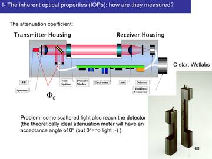
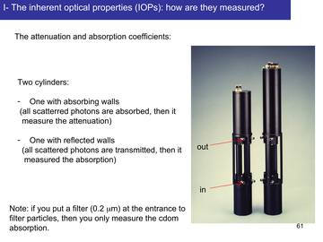

Home › E · Measuring IOPs
IOPs are measured in situ with optical meters. Three families appear in the lecture: transmissometers (c), absorption meters with reflecting walls (a) and backscattering sensors (b_bp).
Attenuation and absorption
A transmissometer sends a collimated beam through a known path and measures the transmitted fraction, T = e−cL, hence c = a + b (slide 60). Real instruments have a finite acceptance angle, so some scattered light reaches the detector and c is slightly underestimated. The two-tube instrument (slide 61) combines a tube with absorbing walls (attenuation) and a tube with reflecting walls (absorption); b = c − a. A 0.2 µm filter at the inlet gives CDOM absorption only.
| Symbol | Name | Meaning | What it implies | Numbers assigned |
|---|---|---|---|---|
| L_0 | initial radiance [W m⁻² sr⁻¹] | Beam entering the water. | Cancels in T. | |
| L(r) | radiance after distance r [W m⁻² sr⁻¹] | What is left of the beam. | ||
| c | attenuation coefficient [m⁻¹] | a + b. | e-folding path 1/c: at r = 1/c the beam is at 37 %. | example: 1.0 m⁻¹ (0.25 m path → T = 0.779) (verified.json) |
| r | distance along the beam [m] | Variable path. | ||
| L | instrument path length [m] | Fixed geometry of the transmissometer. | Illustrative 0.25 m on this site. | used here: 0.25 m (illustrative) |
| T | transmittance [—] | Fraction reaching the detector. | Measure T, then c = −ln T / L. | T = 0.90: c = 0.421 m⁻¹ (verified.json) T = 0.50: c = 2.773 m⁻¹ (verified.json) |
Example (Python, illustrative 0.25 m path): T = 0.90 ⇒ c = 0.42 m⁻¹; T = 0.50 ⇒ c = 2.77 m⁻¹.
Backscattering
A backscattering sensor measures β at a single angle (117°) and extrapolates to the backward hemisphere (slide 62, Boss & Pegau 2001):
| Symbol | Name | Meaning | What it implies | Numbers assigned |
|---|---|---|---|---|
| \beta_p(117^\circ) | particle VSF at 117° [m⁻¹ sr⁻¹] | Measured minus pure water. | ||
| \beta(117^\circ) | measured VSF [m⁻¹ sr⁻¹] | Signal of the sensor. | ||
| \beta_w(117^\circ) | pure-water VSF [m⁻¹ sr⁻¹] | Computed from the Morel/Buiteveld formula. | 90°, 546 nm: 9.44e-05 (verified.json) | |
| b_{bp} | particle backscattering [m⁻¹] | Backward-hemisphere integral. | ||
| \chi | conversion factor [—] | Converts β(117°) to the whole backward hemisphere. | Hides an assumption on the particle phase function. | at 117°: ≈ 1.0–1.1 (slide 62, read from graph) |
The first line of slide 62, a correction of the measured signal for attenuation, is cut off on the slide and is not transcribed.
Worked example, quick Q&A and memory hooks
Quick Q&A
A: A finite acceptance angle lets forward-scattered photons reach the detector (slide 60).
A: b_bp, to extrapolate from 117° to the whole backward hemisphere (slide 62).
Memory hooks
- Absorbing wall = c; reflecting wall = a.Thành hấp thụ → c; thành phản xạ → a.
Lecture slides for this module (Loisel, Marine Optics)
3 slides of the lecture “Marine Optics” (H. Loisel, LOG). Numbers refer to the slide number in the file. Click a page to enlarge; browse all pages.



Exam checklist — points you must mention
- Say what a transmissometer measures and its main error.
- Explain the two-tube principle and b = c − a.
- Say what the 0.2 µm filter does.
- Write b_bp = 2πχβ_p(117°) and the water subtraction.
- Convert T to c for a given path length.
- Máy đo truyền qua cho c = a + b; ống phản xạ cho a; b = c − a.
- Lọc 0,2 µm: chỉ đo hấp thụ CDOM.
- b_bp = 2π χ β_p(117°).
Practice calculations
These tools run in your browser and are checked against Python:
Lecture slides (9 slides; use ← → keys or the buttons)
Quick self-check (10 of 10 questions)
Open the full bank: 10 multiple-choice + 2 essay questions →